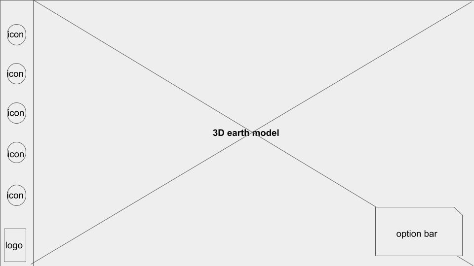
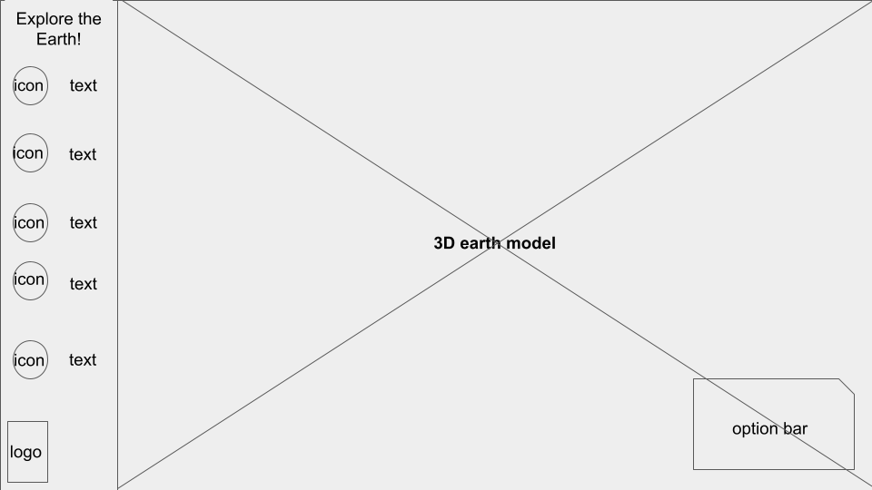

-
Using the favorite website you chose in homework 1, create a wireframe for one page of it using pen/paper, PowerPoint, or any your tool of choice. (use the 'img' tag!) Make sure to let us know what the name of your website is (Use the 'p' tag!)
This is a current wireframe for the Google Earth website.
 -
Try to improve the website you've chosen, and create a redesigned wireframe of one page for the same website using the principles of visual hierarchy that you learned from the article.
This is an improved wireframe for the Google Earth website.

-
What is the goal of the website? Who is it intended for? How does the design accomplish this? Write 2-3 sentences answering these questions. (Use the 'p' tag again!)
The Google Earth website is meant for all curious minds to explore the geography of the Earth and to discover places around the world. The design tries to accomplish this by making the 3D model of the Earth the center of the screen with a black space background to draw the eye there. There is also a bar of icons on the right that you can utilize for exploration.
-
Write 2-3 sentences about what problems your redesign addressed, and how it solved them.
Although the website is well-designed to direct the user's attention to the Earth, it is very hard to navigate the website as there is no accessibility text, or guides on how to use the website. The redesigned wireframe, although very similar to the original, adds text to highlight what tools are available to the users and what exactly the goal of the website is.
NOTE: Make sure to include the wireframe images in the website and don't just put it in your assets folder!
Your wireframes should look something like this: